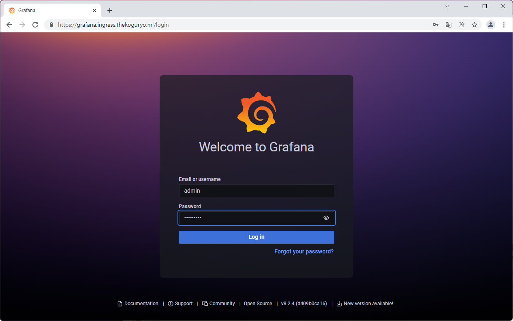
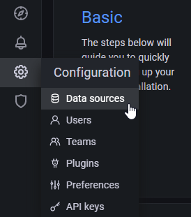
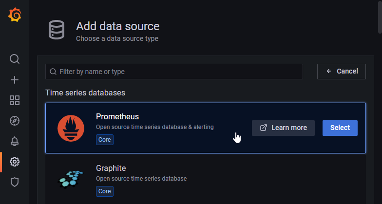
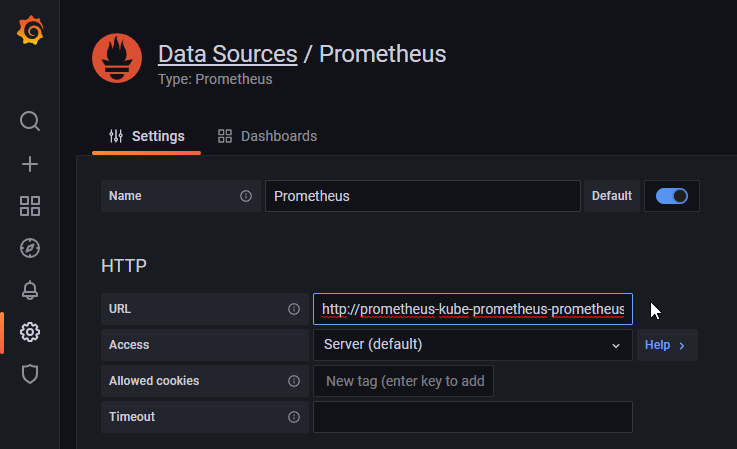
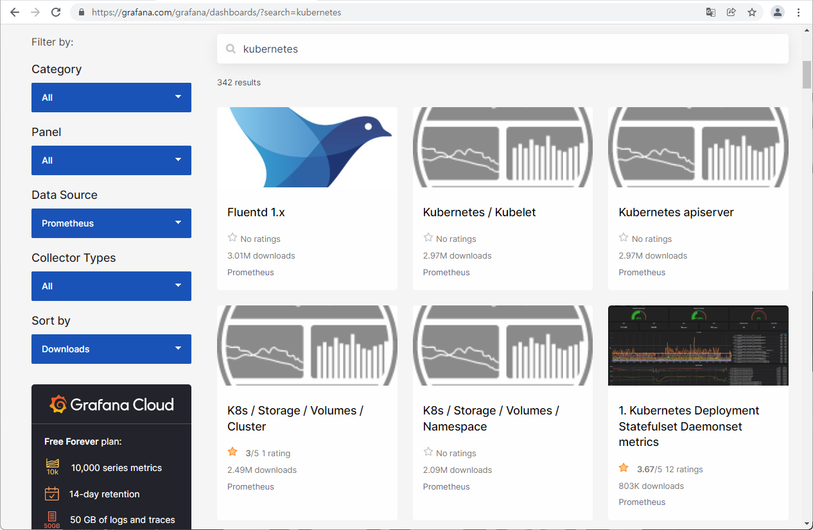
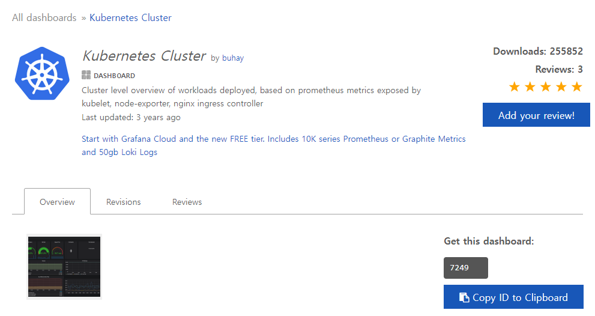
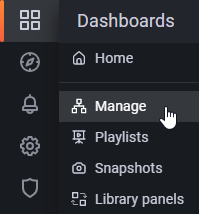
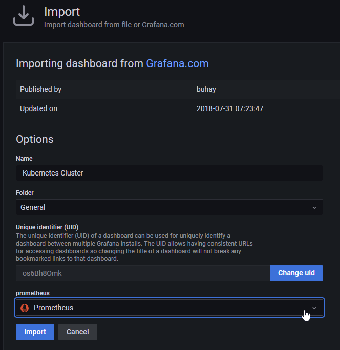
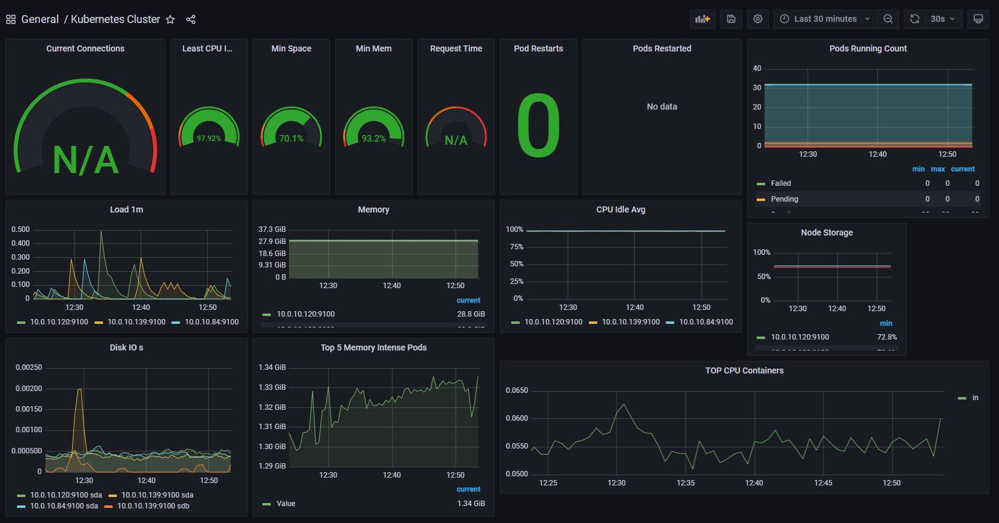

4.3.1 Prometheus&Grafana 설치하기
Prometheus 설치
-
설치용 namespace를 만듭니다.
kubectl create ns monitoring -
Helm Chart를 통해 설치하기 위해 저장소를 등록합니다. 본 예제에서는 Bitnami Helm Chart 저장소를 사용합니다.
helm repo add bitnami https://charts.bitnami.com/bitnami -
설정값 정의
Helm Chart를 설치시 설정가능한 파라미터 목록을 참고하여 변경하고자 하는 값을 입력합니다.
- https://github.com/bitnami/charts/tree/master/bitnami/kube-prometheus#parameters
- 아래 예시는 prometheus와 alertmanager 접근 URL을 이전 장에서 설치한 nginx ingress controller를 사용하는 예시입니다.
cat <<EOF > values.yaml prometheus: ingress: enabled: true hostname: prometheus.ingress.thekoguryo.ml path: / annotations: kubernetes.io/ingress.class: nginx cert-manager.io/cluster-issuer: letsencrypt-staging tls: true alertmanager: ingress: enabled: true hostname: alertmanager.ingress.thekoguryo.ml path: / annotations: kubernetes.io/ingress.class: nginx cert-manager.io/cluster-issuer: letsencrypt-staging tls: true EOF -
prometheus helm chart 설치
helm install prometheus -n monitoring -f values.yaml bitnami/kube-prometheus -
설치결과
Prometheus의 내부 DNS 정보는 이후 Grafana에서 연동할 때 사용됩니다.
oke_admin@cloudshell:~ (ap-seoul-1)$ helm install prometheus -n monitoring -f values.yaml bitnami/kube-prometheus NAME: prometheus ... Prometheus can be accessed via port "9090" on the following DNS name from within your cluster: prometheus-kube-prometheus-prometheus.monitoring.svc.cluster.local ...
Grafana 설치
-
설정값 정의
Helm Chart를 설치시 설정가능한 파라미터 목록을 참고하여 변경하고자 하는 값을 입력합니다.
- https://github.com/bitnami/charts/tree/master/bitnami/grafana#parameters
- grafana 접근 URL을 이전 장에서 설치한 nginx ingress controller를 사용하는 예시입니다.
cat <<EOF > values.yaml admin: password: "higrafana" ingress: enabled: true hostname: grafana.ingress.thekoguryo.ml path: / annotations: kubernetes.io/ingress.class: nginx cert-manager.io/cluster-issuer: letsencrypt-staging tls: true EOF -
grafana helm chart 설치
helm install grafana -n monitoring -f values.yaml bitnami/grafana -
설치결과
아래와 같이 설치되며, 실제 컨테이너가 기동하는 데 까지 약간의 시간이 걸립니다.
oke_admin@cloudshell:~ (ap-seoul-1)$ helm install grafana -n monitoring -f values.yaml bitnami/grafana NAME: grafana ... 2. Get the admin credentials: echo "User: admin" echo "Password: $(kubectl get secret grafana-admin --namespace monitoring -o jsonpath="{.data.GF_SECURITY_ADMIN_PASSWORD}" | base64 --decode)" oke_admin@cloudshell:grafana (ap-seoul-1)$ echo "Password: $(kubectl get secret grafana-admin --namespace monitoring -o jsonpath="{.data.GF_SECURITY_ADMIN_PASSWORD}" | base64 --decode)"
Grafana 설정
-
Grafana 웹 UI를 접속합니다.
-
URL: values.yaml에서 설정한 ingress.hostname
-
관리자 계정
-
User: admin
-
Password: values.yaml에 설정한 admin.password 또는 미입력시 다음 명령으로 확인
echo "Password: $(kubectl get secret grafana-admin --namespace monitoring -o jsonpath="{.data.GF_SECURITY_ADMIN_PASSWORD}" | base64 --decode)"
-

-
-
Prometheus 등록을 위해 왼쪽 메뉴에서 Configuration > Data sources 선택

-
Add data source 클릭
-
Prometheus 선택

-
Prometheus 연결정보 입력
앞서 Prometheus 설치 로그에 확인한 Prometheus 내부 연결 정보를 입력합니다.
http://prometheus-kube-prometheus-prometheus.monitoring.svc.cluster.local:9090
-
아래 쪽 Save & test 클릭
Grafana Dashboard 추가
-
Kubernetes 모니터링을 위해 공개된 Grafana Dashboard를 사용할 수 있습니다.

-
위 사이트에서 검색된 대쉬보드 중 원하는 것을 선택합니다.
-
대쉬보드 상세 페이지에 ID를 확인합니다.

-
Dashboard 등록을 위해 왼쪽 메뉴에서 Dashboards > Manage 선택

-
Import 클릭
-
임포트할 대쉬보드 ID(예, 7249) 입력후 Load 클릭
-
data source를 앞서 등록한 Prometheus 선택후 Import 클릭

-
임포트된 대쉬보드를 통해 OKE 클러스터 모니터링

-
위와 같이 공개된 대쉬보드를 사용하거나, 원하는 대쉬보드를 작성하여 Prometheus에서 수집된 메트릭 정보를 이용하여, Kubernetes 클러스터를 모니터링 할 수 있습니다.
** 이 글은 개인으로서, 개인의 시간을 할애하여 작성된 글입니다. 글의 내용에 오류가 있을 수 있으며, 글 속의 의견은 개인적인 의견입니다. **